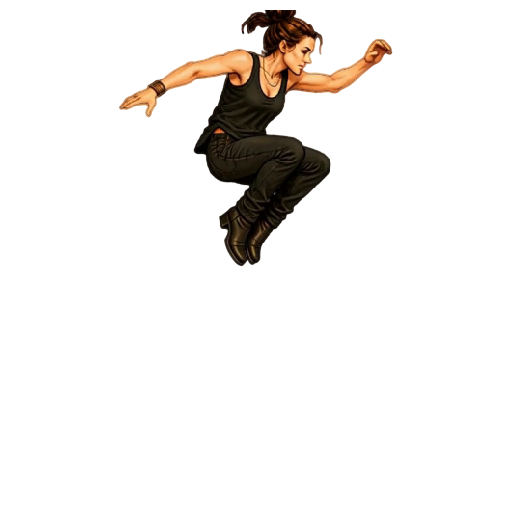
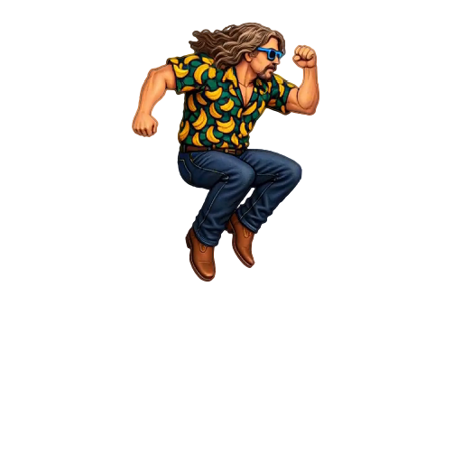
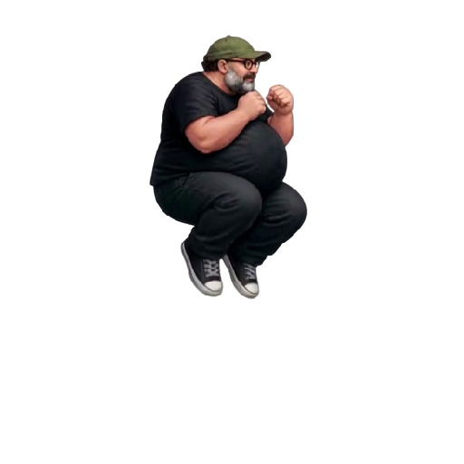
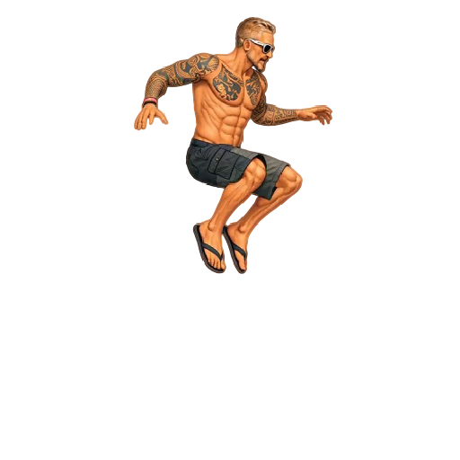
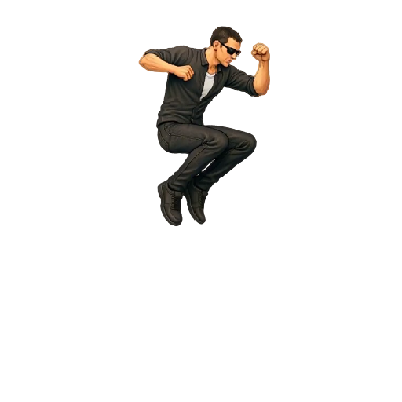
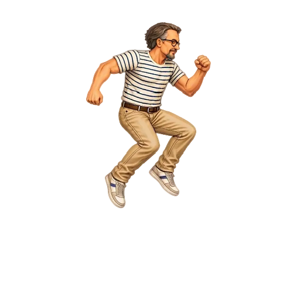
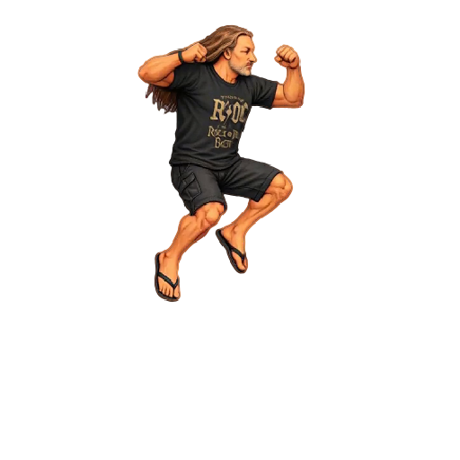

Timing Salto
Aggiornamento: 2026-11-06. Controllati i sette spritesheet. La posa selezionata di apice inizia a 500 ms (0,5 s) per tutti, con ciclo comune di 1000 ms a velocità 1×.
Salita e seconda fase usano durate per frame adattate: FPS prima dell’apice = indice apice (da 0) × 1000 / 500; FPS seconda fase = frame rimanenti × 1000 / 500. Il frame apice appartiene alla seconda fase. Nessun frame è aggiunto, eliminato o invertito; scale, ancoraggi e PNG restano invariati.
Il riferimento è la massima elevazione del corpo visibile, confrontata nelle sequenze originali: non il punto più alto di una mano o del cappello. Plateau, raccolta delle gambe e tagli del foglio rendono alcuni apici una stima artistica; i casi sono annotati sotto. Questa galleria non simula la traiettoria fisica di Godot.
“Riproduci tutte” riallinea la partenza e mantiene il sincronismo nei loop e con caricamento progressivo. Velocità 0,5×: apice a 1 s; 2×: apice a 0,25 s. I timing Godot precedenti, inclusi preparazione e durate variabili di Mangler, restano nel manifest come sourceFrameDurations, sourceDurationMs e sourceTakeoffMs. Il nuovo timing demo modifica anche l’istante di stacco.
Le selezioni sono vincolate agli hash dei PNG e dei rettangoli: dopo una sostituzione o un cambio taglio occorre rivederle. Le pose mostrate usano la stessa normalizzazione della demo; la scala in tabella è quella Godot, prima del fattore comune per personaggio.
Scarica CSV · Selezioni degli apici
| Personaggio | Apice scelto | Frame (da 1) | Apice a | FPS salita / seconda fase | Ciclo | Scala Godot | Note |
|---|---|---|---|---|---|---|---|
| Arianna |  | 23 / 49Sorgente: 23 | 500 ms | 44 / 54 | 1000 ms | 0.78 | Testa tagliata dal bordo superiore per pi? pose: apice stimato dal corpo visibile; plateau vicino ai frame 22-23. |
| Bue |  | 17 / 37Sorgente: 20 | 500 ms | 32 / 42 | 1000 ms | 0.85 | Plateau breve vicino ai frame 17-18; selezionata la posa di massima elevazione del corpo. |
| Mangler |  | 15 / 25Sorgente: 15 | 500 ms | 28 / 22 | 1000 ms | 0.85 | Apice del corpo al frame 15, dopo la massima quota del cappello: non usare solo il bordo alto. Scala Godot 0.85 conservata; il foglio termina ancora in aria. |
| Mileto |  | 22 / 39Sorgente: 26 | 500 ms | 42 / 36 | 1000 ms | 0.87 | Plateau vicino ai frame 21-23; riferimento alla posa del corpo. |
| Oscare |  | 19 / 38Sorgente: 24 | 500 ms | 36 / 40 | 1000 ms | 0.92 | La raccolta delle gambe prosegue dopo la massima quota della testa; scelta la massima elevazione del corpo visibile. |
| Peirò |  | 22 / 40Sorgente: 26 | 500 ms | 42 / 38 | 1000 ms | 0.83 | Plateau vicino ai frame 21-23; riferimento alla posa del corpo. |
| Torpe |  | 17 / 34Sorgente: 21 | 500 ms | 32 / 36 | 1000 ms | 0.9 | Apice del corpo vicino ai frame 17-18; scala e ancoraggio costanti. |